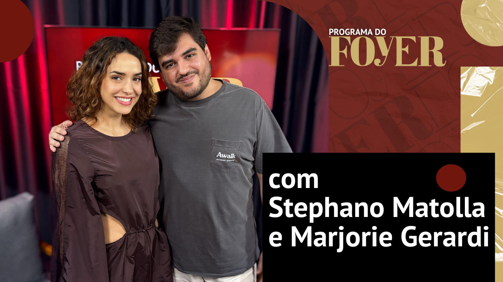

Foto — Foyer.digital
Programa
Stephano Matolla e Marjorie Gerardi - Passaporte para o Amor - Programa do Foyer
No segundo episódio da temporada, recebemos Stephano Matolla e Marjorie Gerardi para um papo divertido sobre o espetáculo "Passaporte para o Amor", dirigido por…